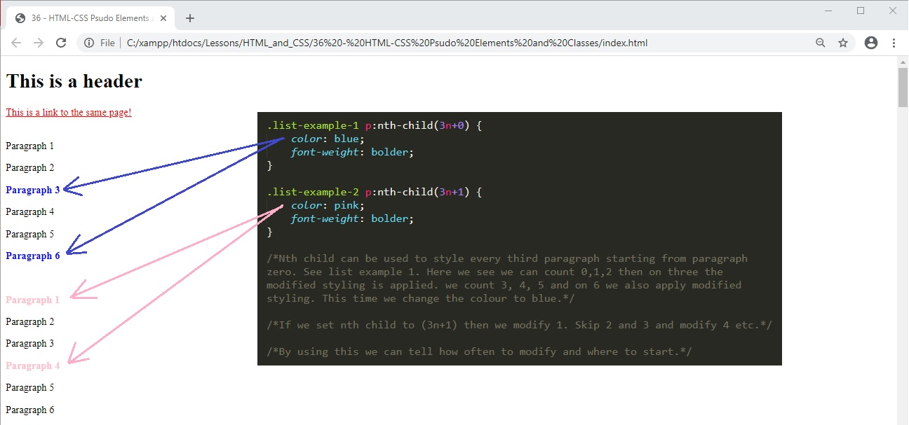
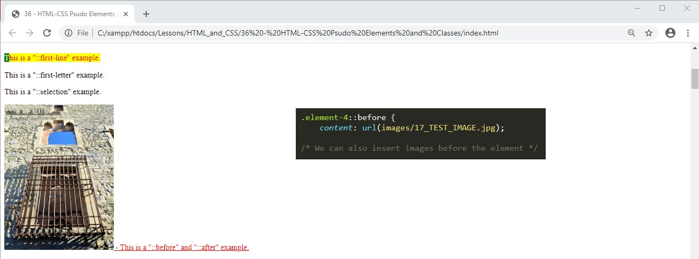

This is a header
This is a link to the same page!
Paragraph 1
Paragraph 2
Paragraph 3
Paragraph 4
Paragraph 5
Paragraph 6
Paragraph 1
Paragraph 2
Paragraph 3
Paragraph 4
Paragraph 5
Paragraph 6
This is a "::first-line" example.
This is a "::first-letter" example.
This is a "::selection" example.
- This is a "::before" and "::after" example.
36 - HTML-CSS Psudo Elements and Classes
01. There are a lot of psudo elements that can be used in CSS. Here I will demonstrate a few of the most common used ones. Below is the starting HTML code.
02. A psudo Element is a way for us to style a specific part of an element. A list of all the psudo elements can be found at:
Link to list of Pseudo Elements
02a. A psudo class changes the state of a specific element when we hover on it.
Link to list of Pseudo Classes
02b. Here is a list of content property.
Link to Content property styling
03. Root is the highest element class on a document.
04. Class hover. IN this example the psudo class is applied to all H1 elements. We can use psuedo styling to any element on a website such as DIV, SECTION, A or P etc...
05. HOVER. In this example the psudo class is applied to all elements.
06. we can do anything to an element with a pseudo class. In this example when the header is hovered over, it is given padding and font-size stylings.
07. ACTIVE. We can use a psudo class to change a certain type of element when clicked. In this example we change the font size, colour and weight. Note that the changes are only visible when we hold the click. Once we let go the element reverts back to it´s original stylings.

08. VISITED. This is similar to active however the element retains its new stylings once we let go of the click.
09a. LAST CHILD will change the last child element under the parent class element. In this example we change the last child colour to blue.
09b. NTH CHILD. we can specify the child to be changed in brackets.
10. NTH CHILD can be used to style even and odd children of a class.
11. NTH child can also be used to modify every 3 or 4 etc children and we can also specify when to start counting.

12. All the above are examples of PSUDO CLASSES. PSEUDO ELEMENTS can change something inside an element. They are denoted by a double colon.
13. We can add more than one pseudo element to one pseudo class. Using the two examples above.
14. PSUEDO ELEMENT SELECTION. will add styling to anything we mouse over and select.
15. PSUEDO ELEMENT BEFORE. We can add something before an element this could be a text or an attribute.
16. We can do this for all sorts of attributes. For example Class. Or even attribures we have made up.
17. We can even inser images as an atribute before using the URL.

18. As well as inserting before we can insert after.